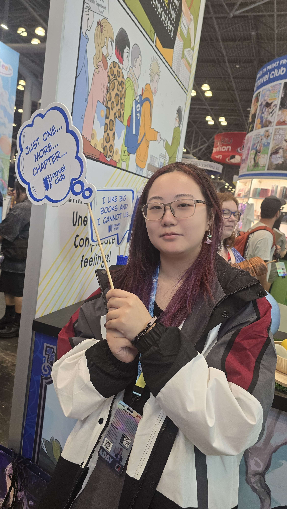

Business Analytics · Information Technology · Creative Practice
I like making
good ideas
become
reality.
Hi, I’m Tiffany Yang, an undergraduate at Rutgers Business School studying Accounting. I enjoy combining technology, communication, and creative problem-solving.
Explore my work ↓
keep
looking
closer.
01 / everydaylooking
closer.
observations
A little context
My work brings together people, technology, and thoughtful organization.
I’m building experience across business analytics, information technology, customer service, social media, tutoring, and event planning. I care about making systems clearer and experiences more welcoming.